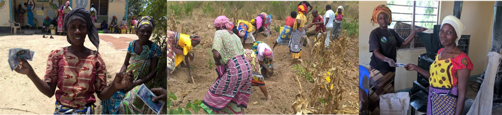
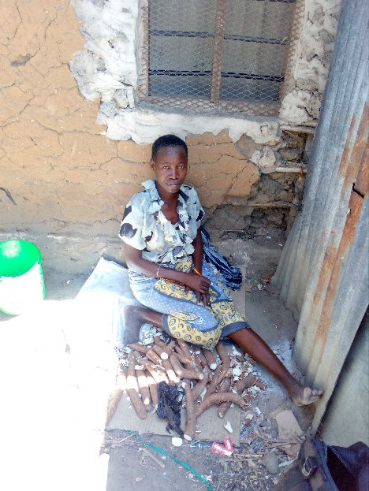

Empowering Mothers
Sarafu-Credit: empowering strong women who never stop fighting for their families wellbeing
We are joining together to celebrate mothers’ lives. It is no secret that being a mother is like no other job in the world. It is a job that never ends and that demands the uttermost dedication. As daughters, grandmothers, fathers, brothers and sons we have come to understand of what commitment, extravagant grace and creativity looks like.
But even though the ripples of their work are present every day in our lives we can sometimes forget to be grateful and take their efforts for granted. Because of this we want to use this opportunity to celebrate the lives of these women and to make sure that they know how much we appreciate them.
This post goes out then to all women out there, in Bangladesh, Miyani, Lindi, Gatina, Ng’ombeni and Kangemi who are using community currencies to help support their children and ensure their offspring have the best possible chances in life. With the increase of income, women use most of the resources to improve the standard of living of their families above all other expenses. We have seen these heroines working with Sarafu-Credit to overcome the daunting obstacles that have previously kept their families in cyclical poverty. These mothers are breaking the chains of circumstances and rising to the opportunity to ensure food security and education for the next generation. The importance of their endeavors cannot be underestimated, women become the pillars of development on which their communities are built upon.

Zainabu, member of the Sarafu-Credit in Miyani, recalls the day when women came together to dig special pits to store water where they would eventually plant maize and legumes: “That time was special because I got paid in Sarafu-Credit from the community shop, this means when am done digging I can go to the community posho mill to mill my maize and have lunch ready for my children when they come from school. It also means I can go to other community members to buy vegetables or fruits to add to the meals!” - Testimonial collected by Caroline Dama
“My daughter used not to go to school because I did not have enough money. I decided to let the boys go and let the girl stay at home. But ever since I joined the BN, I was able to use the CC on my daily needs like food and water and save enough money such that I was able to enroll my daughter to school.”
Dama Ngala , member of Bangla-Pesa network since 2016 and a proud mother sending all of her children to school. - Testimonial collected by Lydia Anyango

Ever since I joined the network I started receiving many more people who come to fetch my water. Because I accept SC I get more customers.”
Priscilla, member of Ng’ombeni-Pesa since 2015 is happy that she can feed and take good care of her granddaughter Caro by using of Sarafu-Credit. - Testimonial collected by Lydia Anyango